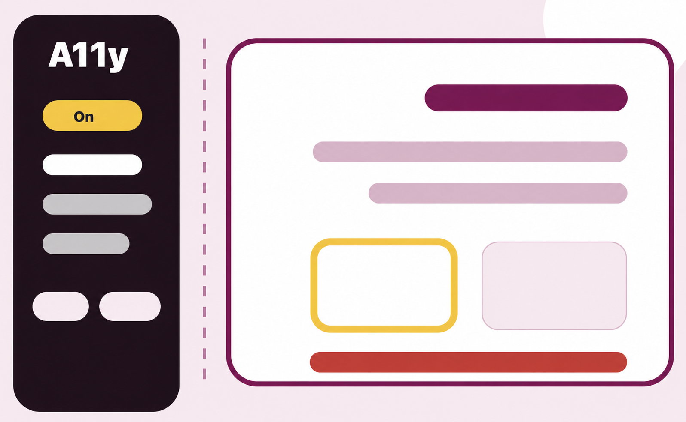

Evalúa sobre páginas reales
Activa el panel en una web y observa directamente los elementos que pueden generar barreras.
Beta · Bookmarklet educativo
A11yEvaluaBasico te ayuda a realizar una primera evaluación básica de accesibilidad web directamente sobre páginas reales, con una experiencia guiada e inspirada en W3C WAI Easy Checks.
Uso educativo · Primera observación guiada · No sustituye una auditoría experta.

El objetivo no es ofrecer una certificación automática, sino facilitar una primera mirada educativa sobre barreras habituales de accesibilidad.
Activa el panel en una web y observa directamente los elementos que pueden generar barreras.
Centra la atención en un único aspecto para reducir ruido visual y favorecer el aprendizaje.
Organiza las comprobaciones desde perfiles como sin visión total, baja visión, motriz, auditiva y cognitiva.
A11yEvaluaBasico se instala como un marcador del navegador. Después se activa sobre la página que quieres revisar.
La herramienta no solo lista comprobaciones: organiza la mirada. Cada filtro muestra las pruebas más relevantes para observar barreras desde una discapacidad concreta.
Texto alternativo, título, encabezados, puntos de referencia, enlaces de salto, idioma, formularios y transcripciones.
Contraste, blanco y negro y zoom manual al 200%.
Orden de foco, enlace de salto, campos de formulario y controles utilizables.
Audio, vídeo, subtítulos, transcripciones y alternativas equivalentes al contenido sonoro.
Títulos claros, etiquetas, errores, contraste y apoyos textuales en audio y vídeo.
La herramienta toma como punto de partida la propuesta Easy Checks, una guía para realizar primeras comprobaciones de accesibilidad. A11yEvaluaBasico adapta ese enfoque a una experiencia visual e interactiva sobre la propia página web.
Para practicar la detección de barreras en ejercicios, proyectos y páginas web reales.
Para explicar criterios básicos de accesibilidad con ejemplos visibles durante una clase o actividad.
Para iniciar una revisión básica antes de abordar una evaluación más completa.
Arrastra este botón a la barra de marcadores del navegador. Después, abre cualquier página web y activa el marcador para mostrar el panel.
Arrástralo arriba para guardarlo como marcador build 235
javascript:(function(){if(window.A11yEvaluaBasico){window.A11yEvaluaBasico.open();return;}var s=document.createElement('script');s.charset='utf-8';s.src='https://accessibilitat.udl.cat/A11yEvaluaBasico/A11yEvaluaBasico.js?v=235';s.onload=function(){if(window.A11yEvaluaBasico){window.A11yEvaluaBasico.open();}};s.onerror=function(){var id='apcf-load-error';var old=document.getElementById(id);if(old)old.remove();var box=document.createElement('aside');box.id=id;box.setAttribute('role','alert');box.setAttribute('aria-live','assertive');box.style.cssText='position:fixed;inset:auto 1rem 1rem auto;z-index:2147483647;max-width:min(34rem,calc(100vw - 2rem));background:#fff3f3;color:#7a0010;border:2px solid #c1121f;border-radius:.85rem;padding:.95rem 1rem;box-shadow:0 12px 30px rgba(0,0,0,.25);font:700 16px/1.35 system-ui,-apple-system,BlinkMacSystemFont,"Segoe UI",sans-serif';box.innerHTML='<strong style="display:block;margin:0 0 .35rem">No se pudo cargar Evaluación básica de accesibilidad.</strong><span style="display:block">Revisa que el archivo JS sea público y esté disponible por HTTPS.</span>';document.body.appendChild(box);setTimeout(function(){box.remove();},10000);try{alert('No se pudo cargar Evaluación básica de accesibilidad. Revisa que el archivo JS sea público y esté disponible por HTTPS.');}catch(_e){}};document.body.appendChild(s);})();No. Es una herramienta educativa para una primera observación guiada. No certifica conformidad WCAG ni sustituye una revisión experta.
No exactamente. Funciona como bookmarklet: un marcador que carga el panel de evaluación sobre la página que estás visitando.
Un navegador con barra de marcadores y una página web abierta. La herramienta carga el script desde la web de accessibilitat.udl.cat.
Para facilitar el aprendizaje desde distintas experiencias de uso y conectar cada barrera con las personas a las que puede afectar.